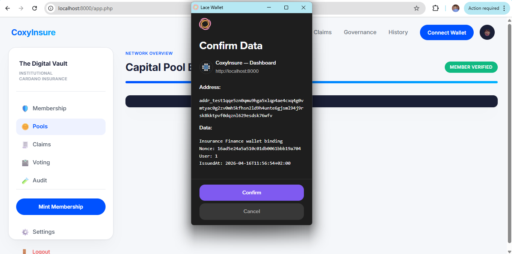

3. Connect Wallet and Verify Access
Wallet connection is the gate between the browser and the Cardano blockchain. In CoxyInsure, connecting a wallet is not only about reading balances. It also determines whether you can submit transactions, mint membership, deposit to pools, buy cover, and participate in governance.
3.1 Connect Wallet
- Click the Connect Wallet button in the top navigation.
- Choose your wallet provider.
- Approve the connection request in the wallet popup.
- Wait for the UI to refresh and display the connected state.
3.2 Wallet Binding and Verification
Some deployments of CoxyInsure use a wallet binding flow. In that flow, the backend checks whether the currently connected wallet matches the wallet approved for the signed-in account. If not, the user may be prompted to sign a nonce-based challenge to establish or confirm wallet ownership.
3.3 Successful and Failed States
Successful connection
The app shows a connected wallet state and enables protected blockchain actions.
Wrong wallet
The app may block protected actions and show a warning modal asking you to switch to the approved wallet.
Binding failure
If the backend challenge is missing or invalid, reconnect and retry the wallet verification flow.
